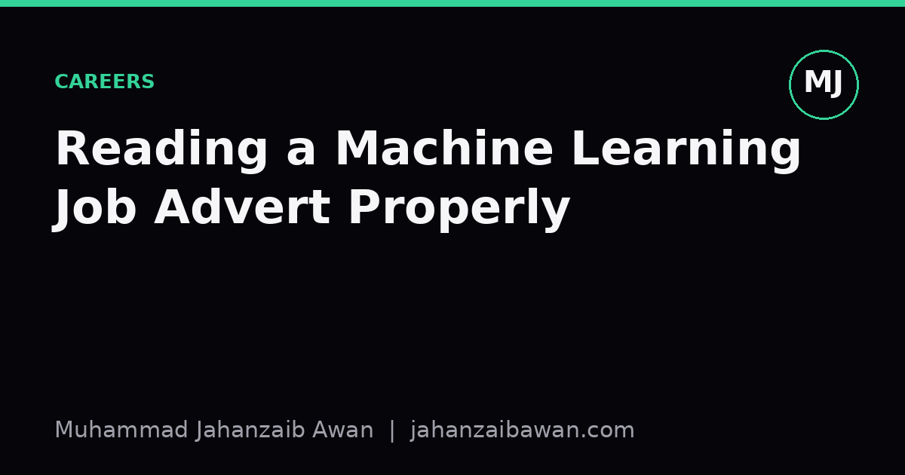

Reading a Machine Learning Job Advert Properly
Job postings for machine learning roles are written in a dialect all their own. Here is how to decode the requirements before you decide whether to apply.

Why the wording matters
Most machine learning job adverts are written by a mix of people: a hiring manager who knows exactly what they need, an HR generalist who copies phrases from the last five postings, and sometimes a template inherited from a completely different role. The result is language that sounds precise but is often vague by accident. If you take every line literally, you will either talk yourself out of applying to roles you are qualified for, or walk into an interview wildly unprepared for what the team actually does day to day.
I have spent a fair amount of time reading these adverts while job hunting alongside my MSc, and the pattern that emerges is that requirements cluster into a small number of categories, each of which needs a different kind of translation. Some phrases describe a genuine hard requirement, some describe a nice-to-have dressed up as mandatory, and some are simply the recruiter's best guess at what 'machine learning' means. Learning to tell these apart saves time on both sides.
This matters practically because the cost of misreading an advert is asymmetric. If you skip a role you were actually qualified for, you lose an opportunity silently, you never even find out. If you apply to a role you are badly suited for, you lose hours on an application and possibly an interview slot that someone better matched could have used. Reading the advert well is itself a small but useful skill.
Decoding the common phrases
'Strong background in deep learning' rarely means you need to have published a paper on architecture design. In the vast majority of postings, it means you have trained and fine-tuned neural networks using a standard framework, you understand what overfitting looks like in a loss curve, and you can explain why you chose one architecture over another for a given problem. If the role also lists a specific framework by name, that is usually the real requirement; the 'deep learning' phrase is the marketing wrapper.
'Experience with production machine learning systems' is one of the more honest phrases, and also one of the more selective ones. It typically distinguishes candidates who have only trained models in a notebook from those who have dealt with a model that had to serve predictions reliably, monitor for drift, or survive a retraining pipeline. If you have built even a small end-to-end project, from data ingestion through to a served endpoint, that experience usually counts, even if the scale was modest. What they are testing for is whether you understand that a model's job does not end at validation accuracy.
'Strong statistical foundations' or 'solid understanding of experimental design' is worth taking seriously, because it is one of the requirements teams complain most often about candidates lacking. In practice this means you can explain why a train-test split needs to respect time order or grouping when the data has structure, why an A/B test needs a power calculation before it starts rather than after, and why a model that looks 2 percentage points better on one test set might just be noise. A team that lists this explicitly has probably been burned by a hire who could build models but could not tell whether the results meant anything.
Then there are the vague catch-alls: 'passion for AI', 'ability to work in a fast-paced environment', 'excellent communication skills'. These are rarely filtering criteria in the technical sense. They are there because the job description template requires soft-skill bullet points, and they are worth a single line in your cover letter at most, not hours of anxious self-assessment.
A worked example
Take a hypothetical advert asking for '3+ years experience, strong Python, experience with PyTorch or TensorFlow, understanding of MLOps, and a track record of shipping models to production'. Read literally, this sounds like it needs a senior engineer with a long CV. Read pragmatically, the years figure is often a soft anchor rather than a hard cutoff, especially if the rest of your application shows the actual skills. A candidate with eighteen months of focused, well-documented project work, including one model that went from raw data to a working API with basic monitoring, often matches the spirit of that requirement better than someone with three years of loosely related experience.
The 'PyTorch or TensorFlow' line is a genuine filter but a shallow one; it is testing whether you have used any modern deep learning framework fluently, not whether you know the specific one they use internally. Frameworks are learnable in weeks; the underlying concepts, such as computation graphs, gradient flow and batching, transfer directly. 'Understanding of MLOps' is doing a lot of work in one phrase, and in most junior-to-mid postings it means something modest: version control for code and, ideally, data; some awareness of experiment tracking; and comfort with the idea that a model needs a deployment story, not necessarily hands-on Kubernetes experience.
Put together, this advert is really asking: can you write clean Python, have you trained a neural network on a real problem, and have you thought at least once about what happens to a model after it leaves your notebook. That is a much smaller and more answerable bar than the original wording suggests, and it is one that a well-chosen portfolio project can demonstrate directly, even without formal job titles to point to.
The practical takeaway
When you read a machine learning job advert, separate the requirements into three buckets: hard technical filters that are named specifically, such as a framework, a language, or a statistical concept; softer proxies for experience, such as years worked or seniority of past roles, which can often be satisfied by depth of project work instead; and template filler that exists because job descriptions have a house style, not because anyone will check it.
The most useful habit is to ask, for each bullet point, what failure mode the team is trying to avoid by writing it. A line about experimental design usually reflects a past hire who shipped an untrustworthy result. A line about production experience usually reflects a past hire whose model never left the notebook. Reading the advert this way turns a wall of jargon into a short list of concrete things you can either demonstrate or honestly admit you are still building, which is a far better use of your time than guessing whether you are 'qualified enough' to apply.